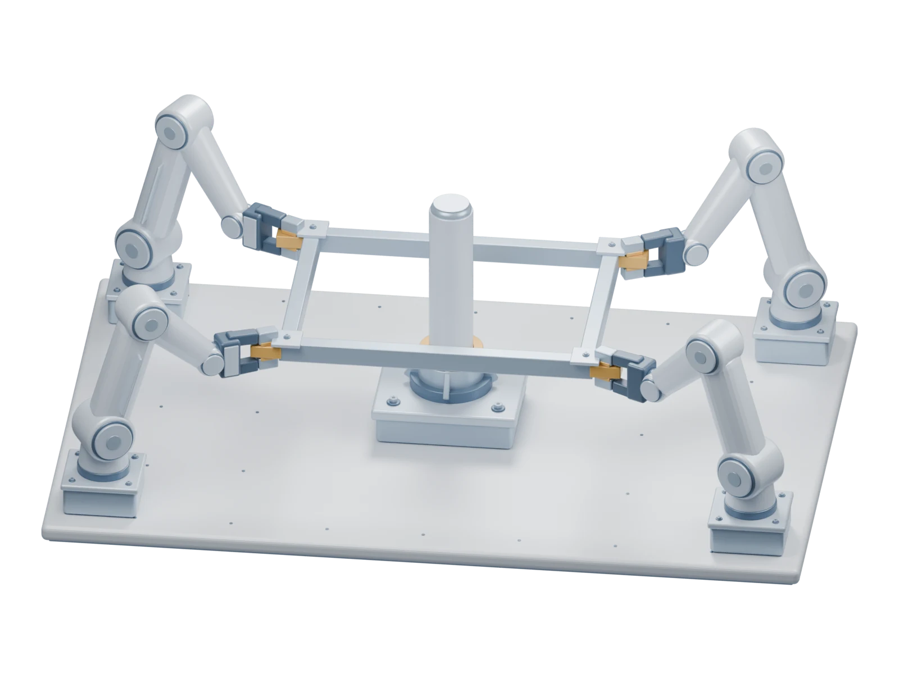

Complete local policies. Learned interaction.
VLA-Fabric
Learning multi-arm coordination.

How Should VLA Agents Interact?
From one joint policy
to interacting local policies.
VLA-Fabric establishes a learnable collaboration interface between complete, arm-local VLA policies. Each agent retains its observations and action generation, while learned internal representations connect it to its peers.
01 / Interaction discovery
Where should
policies interact?
A decomposable bimanual policy provides a controlled test bed. We separate its two SingleVLA branches and vary the information exchanged, the interaction operator, and fine-tuning.
Architecture and adaptation, considered together.
32 runs across Handover Box and Shoes Table.
Interaction structure shapes coordination.
Private K/V supplies useful peer context. The architecture study examines how Common aggregation, action-side interaction, and adaptation shape the use of peer information.
The learning recipe matters.
Common-first combines an additional Common-path initialization stage with full-interaction fine-tuning and improves the matched SingleVLA configurations. Fine-tuning recipes are adapted to each backbone.
Reusable coordination functions.
The tasks reveal different preferences for Common aggregation and action fusion. RAW Common, Private K/V, and Linear readout fusion form the canonical SingleVLA realization carried forward.
02 / Cross-backbone transfer
The same functions.
Different implementations.
We transfer the coordination principle through backbone-specific implementations and fine-tuning in homogeneous π0.5 teams.
Shared context
Common representations form shared context within the VLM or multimodal prefix.
Receiver-specific context
Peer keys and values condition local queries, while action generation remains receiver-local.
Coordination near decoding
Linear readout fusion in SingleVLA becomes gated residual peer attention in π0.5's iterative Action Expert.
Bimanual capability
Task success (%)
| Policy | Handover Box | Shoes Table | Handover Mic | Scan Object |
|---|---|---|---|---|
| RDT-1B | 69.4 | 66.0 | 90.0 | 4.0 |
| π0 | 78.8 | 82.4 | 98.0 | 18.0 |
| TwinVLA | 78.0 | 84.8 | 84.0 | 11.0 |
| SingleVLA-Fabric | 80.0 | 70.0 | 84.0 | — |
| π0.5-Fabric | 80.5 | 94.5 | 97.5 | 33.0 |
External results are taken from TwinVLA for Box/Shoes and TwinVLA Mic/Scan, and from the RoboTwin leaderboard for RDT-1B and π0 on Mic/Scan. Fabric rows use 200 conditions per task. The table compares complete systems with their respective pretraining and evaluation protocols.
Which interactions do trained policies use?
Fixed-weight inference removals
| Setting | Box | Shoes | Mic |
|---|---|---|---|
| Full | 75.0 | 78.0 | 81.5 |
| w/o Common | 38.5 | 19.0 | 52.5 |
| w/o Private K/V | 59.0 | 64.5 | 60.5 |
| w/o action | 43.0 | 7.5 | 52.5 |
| All-off | 20.0 | 1.5 | 13.5 |
| Setting | Box | Shoes | Mic | Scan |
|---|---|---|---|---|
| Full | 79.0 | 94.5 | 97.5 | 33.0 |
| w/o Common | 67.0 | 93.5 | 99.0 | 27.5 |
| w/o Private K/V | 78.5 | 93.5 | 11.0 | 4.0 |
| w/o action | 59.0 | 87.0 | 98.0 | 19.0 |
| All-off | 12.5 | 85.0 | 1.0 | 1.0 |
Each removal uses its own batch's Full reference above, over 200 conditions per setting. All-off is a fixed-weight inference ablation that disables all three interaction paths in the trained Full policy.
The importance of peer information depends on the task. Action interaction has a strong effect on Box, while Private K/V matters most for π0.5 on Mic and Scan. Shoes is more robust to individual removals.
One role checkpoint, multiple tasks.
Shared multi-task fine-tuning
| Policy | Box | Shoes | Mic | Scan |
|---|---|---|---|---|
| Shared π0.5-Fabric | 69.0 | 78.0 | 97.0 | 40.0 |
The same checkpoint per role serves all four tasks. Success rates are measured on the shared-policy development conditions.
03 / Team expansion
More arms.
Still complete local policies.
Adding an arm introduces another complete policy and expands the peer set. Local action heads retain their dimensions; each task and team size is fine-tuned from pretrained VLAs.
Simulation
From individual placement to shared-object control.
Task illustrations from recorded trajectories; quantitative policy evaluations are reported separately below.
| Policy | Stack3 | Frame3 | Frame4 | Arch4 |
|---|---|---|---|---|
| Independent | 90.5 | 67.5 | 9.5 | 0.0 |
| VLA-Fabric Full | 91.0 | 79.5 | 89.5 | 5.0 |
Four-arm frame alignment shows the largest Full–Independent gap. Stack Cube supports comparable success under both settings; Arch Building probes multi-stage structural assembly.
Physical robots
Coordination across local views.
Three- and four-arm systems
Global and wrist cameras share the same recording timeline. Wrist-view surroundings are privacy blurred. Selected videos illustrate behavior; the table reports repeated physical trials.
| Policy | Basket3 | Relay3 | Relay4 | Frame4 |
|---|---|---|---|---|
| Independent | 72.0 | 16.0 | 40.0 | 36.0 |
| VLA-Fabric Full | 88.0 | 56.0 | 72.0 | 60.0 |
Local policies with learned interaction improve over independently trained policies in all four physical tasks. Object relays and shared-frame manipulation impose stronger timing and support dependencies than parallel basket placement.
Build on VLA-Fabric
A building block for
networked embodied intelligence.
Complete local policies that coordinate through learned interactions during action generation.
Explore the code